{kind=link}
{kind=link}
{kind=link}
{kind=link}
matrix(1 0 0 1 40 40)
source
source

matrix(0.707 0.707 -0.707 0.707 40 40)
source
source
matrix(0.707 0.707 0 1.414 40 40)
source
source
Il existe plusieurs méthodes permettant d'utiliser des graphiques SVG au sein d'un site Web.
Voici le code source du document SVG correspondant au lien ci-dessus :
<?xml version="1.0" encoding="utf-8"?> <!DOCTYPE svg PUBLIC "-//W3C//DTD SVG 20010904//EN" "http://www.w3.org/TR/2001/REC-SVG-20010904/DTD/svg10.dtd"> <svg xmlns="http://www.w3.org/2000/svg" width="180" height="180"> <circle fill="black" cx="50" cy="50" r="25"/> <circle fill="black" cx="125" cy="50" r="25"/> <circle fill="black" cx="87.5" cy="110" r="50"/> <ellipse fill="white" cx="70" cy="100" rx="7" ry="12"/> <ellipse fill="white" cx="105" cy="100" rx="7" ry="12"/> <circle fill="black" cx="70" cy="108" r="5"/> <circle fill="black" cx="105" cy="108" r="5"/> <circle fill="red" cx="87.5" cy="115" r="8"/> <path d="M70,125 A35,35 0 0,0 105,125 A35,85 0 0,1 70,125 z" fill="yellow"> </path> </svg>
Ce code permet en particulier de noter l'URI PUBLIC et l'URL SYSTEM correspondant à la DTD de SVG 1.0, ainsi que l'URI de l'espace de noms réservé à SVG.
L'inclusion d'un document SVG dans une page HTML se fait à l'aide de la balise 'img', comme ci-dessous :
<img src="smile.svg" class="framed">
Historiquement on a pu faire appel aux balises EMBED et OBJECT pour le même résultat que celui actuellement obtenu avec la balise IMG.
Beaucoup plus récemment, le vocabulaire SVG a été nativement intégré à HTML 5, ce qui permet d'utiliser directement les balises SVG dans un document HTML.
Les coordonnées utilisateur de la zone graphique doivent être spécifiées au sein du document SVG grâce à l'élément 'viewBox':
<svg xmlns="http://www.w3.org/2000/svg" width="180" height="180" viewBox="0 0 180 180">
Ces coordonnées donnent l'emplacement et les dimensions de la fenêtre permetttant d'observer le graphique.
Par exemple, pour un graphique par ailleurs identique :
La valeur de l'attribut 'viewBox' comporte, dans l'ordre, les coordonnées 'x' et 'y' de l'origine (coin haut gauche), suivies par la largeur et la hauteur de la zone graphique en coordonnées utilisateur.
Les dimensions de l'image sont spécifiés au navigateur grâce aux mécanismes classiques, propriétés 'width' et 'height' de l'élément, ou attributs éponymes de la balise 'img' :
|
width:180px; height:180px
|
width:90px;
height:90px |
width:45px;
height:45px |
Notez comment le navigateur redimensionne l'image pour mapper correctement la zone utilisateur, spécifiée via l'attribut 'viewBox' dans le document SVG, sur la zone réservée à l'image, positionnée et dimensionnée depuis le document contenant.
Les formes de base disponibles en SVG sont le rectangle, le cercle, l'ellipse, la ligne simple ou multipoints, et le polygone, auxquelles on peut ajouter le texte :
| 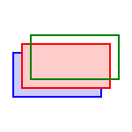 | 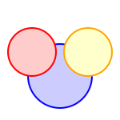 | 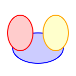 | |
| 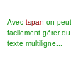 |
SVG offre de nombreuses autres possibilités ‐ courbes de Bézier, gradients, masques ou filtres, dont voici quelques aperçus :
| 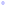 | 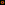 | 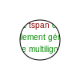 |
SVG dispose également d'éléments permettant de grouper des formes afin de leur affecter communément une liste d'attributs (élément 'g') ou afin de capitaliser la description d'éléments complexes instanciés en plusieurs exemplaires au sein d'un document (éléments 'symbol' et 'use'). La définition d'éléments réutilisables se fait en général au sein d'une section spéciale (élément 'defs') se trouvant en tête du document.
Le premier document ci-dessous a par exemple été construit à l'aide de trois instances d'oreilles (dont une redimensionnée pour le visage), et de deux instances d'un élément unique pour les yeux. Le second quant à lui réinstancie ailleurs des éléments 'g' nommés à l'aide de l'attribut 'id'. (Voir ci-dessous pour les transformations prédéfinies).
| 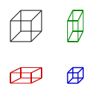 |
SVG dispose d'un jeu de tranformations géométriques prédéfinies correspondant à des changements de repères (translation, modification d'échelle, rotation, repère non orthogonal) pouvant être appliquées à un élément graphique, ou plus généralement à un élément 'g' regroupant plusieurs éléments graphiques.
Voici quelques exemples :
| 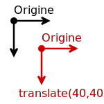 | 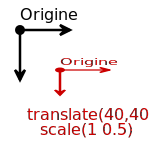 | 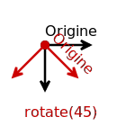 | 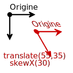 |
Mathématiquement les transformations peuvent être représentées sous la forme d'un produit matriciel permettant de passer du système de coordonnées de l'objet inséré au système de coordonnées dans lequel il s'inscrit (objet parent) :
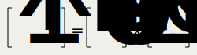
Les matrices correspondant aux transformations prédéfinies sont données ci-dessous :
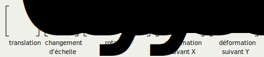
On peut observer que parmi les 9 termes de la matrice de passage 3x3, seuls sont modifiables les 6 termes baptisés de 'a' à 'f'. Outre la possibilité d'enchaîner les transformations prédéfinies dans n'importe quel ordre, il est possible en SVG de spécifier directement une matrice de transformation par l'intermédiaire de ces 6 termes.
Le dernier exemple ci-dessous est obtenu à l'aide de la transformation 'matrix(0.707 0.707 0 1.414 40 40)'. Cette matrice est le résultat du produit matriciel des matrices correspondant à une translation(40,40) suivie par une rotation(45) puis par une déformation skewX(45) :
|
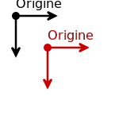
matrix(1 0 0 1 40 40)
source |
matrix(0.707 0.707 -0.707 0.707 40 40)
source |
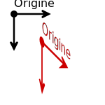
matrix(0.707 0.707 0 1.414 40 40)
source |
SVG est compatible avec CSS, ce qui signifie que la valeur des attributs des éléments SVG peut être spécifiée depuis une feuille de style externe, interne ou locale. Les trois images ci-dessous correspondent à un même document SVG simplement affiché à l'aide de trois feuilles de style différentes :

|
Une feuille de style externe s'appelle classiquement depuis un document SVG à l'aide d'une balise 'xml-stylesheet' :
<?xml-stylesheet href="smile1.css" type="text/css"?>
Une feuille de style interne est spécifiée au sein de l'élément 'defs' à l'aide d'une balise 'style'. Il est éventuellement possible de protéger le contenu d'une feuille de style interne à l'aide d'une section CDATA :
<defs>
<style type="text/css"><![CDATA[
#eyes ellipse {
fill: white;
stroke: black;
}
]]></style>
</defs>
SVG permet d'animer le contenu d'un document. De nombreuses propriétés des divers éléments SVG sont 'animables'. Voir ci-dessous deux exemples d'animation SVG. Les exemples n'ont pas été insérés directement dans ce document pour ne pas inutilement charger le CPU.
SVG est compatible Javascript. Ce langage permet de manipuler directement l'arborescence des éléments d'un document SVG par l'intermédiaire de l'API DOM (Document Object Model). Au-delà de la modification dynamique du contenu d'un document, Javascript permet également de construire des documents interactifs réagissant à diverses actions de l'utilisateur (événements souris ou clavier) :
N.B. Pour que le code Javascript fonctionne, il est nécessaire d'inclure le document SVG à l'aide d'une balise 'OBJECT' et non pas 'IMG' :<object data="fun.svg" type="image/svg+xml" style="width:50em"></object>
Côté SVG, la balise 'script' encapsulée dans une section CDATA est insérée avant la section 'defs'. Comme dans le cas des documents HTML, les événements concernant certains éléments SVG sont liés aux actions grâce à des attributs dédiés aux interactions :
<svg xmlns="http://www.w3.org/2000/svg" viewBox="0 0 1100 200">
<script type="text/javascript"><![CDATA[
function ButtonDown(evt,bname) {
var button;
button=evt.target.ownerDocument.getElementById(bname);
button.setAttribute("filter", "url(#ButtonIn)");
}
...
]]></script>
<defs> ... </defs>
<g id="button" onmousedown="ButtonDown(evt,'button')">
<rect x="20" y="35" width="122" height="109" fill="maroon" />
</g>
...
</svg>
La possibilité d'animer les éléments SVG et d'interagir avec l'utilisateur tout en contrôlant l'animation et les interactions à partir d'un langage de programmation comme Javascript, capable également d'accéder au contenu HTML du navigateur et à l'envoi d'informations vers un serveur (cf. formulaires), ouvre la porte à la réalisation d'interfaces graphiques destinées à des applications en ligne, qu'elles soient ludiques, pédagogiques ou professionnelles.
{kind=link}
{kind=link}